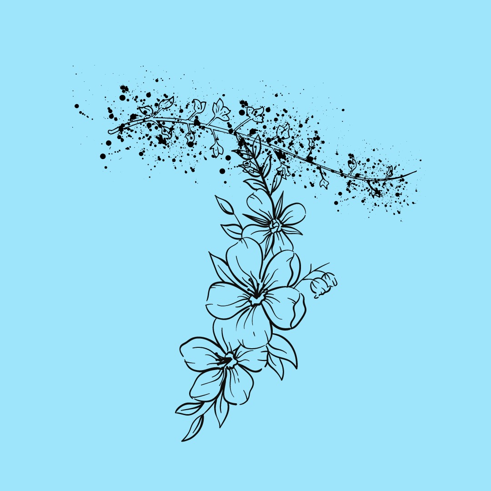

About This Site

Libraries are cornerstones of our commmunities as hubs for knowledge,research and much more. We, at Trinetra present you the joy of reading where you can find your choice over 1000 of books.
"May you find the reader within you"!